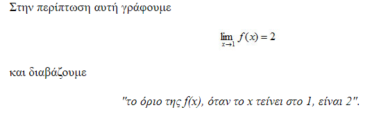
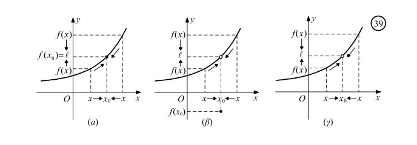
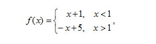
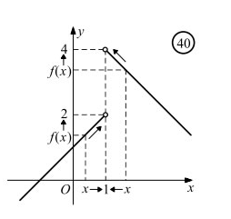
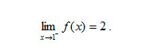
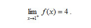

Επιλέξτε την απάντηση που θεωρείτε σωστή και πατήστε το κουμπί που λέει "Eπιλογή" για να σας εμφανιστεί η απάντηση και η επόμενη ερώτηση!
Στο τέλος όλων των ερώτήσεων θα σας εμφανιστεί το σκόρ σας!
Η συνάρτηση αυτή έχει πεδίο ορισμού το σύνολο Df = R−{1}.Πως γράφεται;
Η σωστή απάντηση είναι f(x)=x^2-1/x-1! με x διάφορο του 1!
\
Επομένως, η γραφική της παράσταση είναι η ευθεία y =x + 1 με εξαίρεση το σημείο A(1,2)!
"Καθώς το x, κινούμενο με οποιονδήποτε τρόπο πάνω στον άξονα xʹx, προσεγγίζει τον πραγματικό αριθμό 1, το f(x), κινούμενο πάνω στον άξονα yʹy,προσεγγίζει τον πραγματικό αριθμό 2.
Και μάλιστα, οι τιμές f(x) είναι τόσο κοντά στο 2 όσο θέλουμε, για όλα τα x ≠ 1 που είναι αρκούντως κοντά στο 1".

Όταν οι τιμές μιας συνάρτησης f προσεγγίζουν όσο θέλουμε έναν πραγματικό αριθμό ℓ, καθώς το x προσεγγίζει με οποιονδήποτε τρόπο τον αριθμό x0, τότε γράφουμε
και διαβάζουμε:
Η σωστή απάντηση είναι "το όριο της f(x), όταν το x τείνει στο x0 , είναι ℓ " ή "το όριο της f(x) στο x0 είναι ℓ ".

Από τα παραπάνω σχήματα παρατηρούμε ότι:
— Για να αναζητήσουμε το όριο της f στο x0, πρέπει η f να ορίζεται όσο θέλουμε "κοντά στο x0", δηλαδή η f να είναι ορισμένη σ' ένα σύνολο της μορφής
(α, x0) ∪ (x0, β) ή (α, x0) ή (x0, β).
— Το x0 μπορεί να ανήκει στο πεδίο ορισμού της συνάρτησης (Σχ. 39α, 39β) ή να μην ανήκει σ' αυτό (Σχ. 39γ).
— Η τιμή της f στο x0, όταν υπάρχει, μπορεί να είναι ίση με το όριό της στο x0 (Σχ. 39α) ή διαφορετική από αυτό. (Σχ. 39β).
Έστω, τώρα, η συνάρτηση:

της οποίας η γραφική παράσταση αποτελείται από τις ημιευθείες του σχήματος:

Παρατηρούμε ότι:
Όταν το x προσεγγίζει το 1 από αριστερά ,τότε οι τιμές της f προσεγγίζουν όσο θέλουμε τον πραγματικό αριθμό 2. Στην περίπτωση αυτή γράφουμε:
Όταν το x προσεγγίζει το 1 από αριστερά (x < 1 ) , τότε οι τιμές της f προσεγγίζουν όσο θέλουμε τον πραγματικό αριθμό 2. Στην περίπτωση αυτή γράφουμε:

Οταν το x προσεγγίζει το 1 από δεξιά (x>1), τότε οι τιμές της f προσεγγίζουν όσο θελουμε τον πραγματικό αριθμό 4. Στην περίπτωση αυτή γράφουμε:
